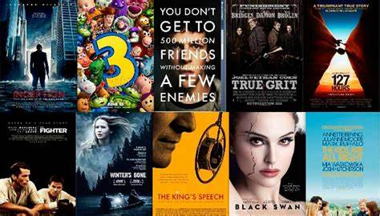

Bienvenidos al sitio de las reseñas mas actuales de los Libros,
Películas y videojuegos en tendencia
INTRODUCIÓN
El sitio Reseñas es creado con el proposito de ofrecer un análisis
detallado y honesto sobre los mejores libros, peliculas y videojuegos,
en estas tres categorías el sitio ofrece una amplia variedad de
reseñas y críticas que te ayudarán a tomar decisiones informadas sobre
qué leer, ver o jugar. Nuestro sitio web evita que evites perder
tiempo averiguando y teniendo una mala experiencia del cual .
Nuestras categorías
Libros
En esta sección encontraras desde clásicos literarios hasta los
últimos bestsellers, encontraras todos los géneros: ficción, no
ficción, fantasía, ciencia ficción, romance y mucho más.
Ver reseñas de libros
Películas

Encontrarás los últimos estrenos cinematográficos. Dentro de esta
sección se cubren todos los géneros, desde dramas, comedias, acción,
ciencia ficción hasta documentales y cine independiente. Descubre
reseñas que te ayudarán a elegir tu próxima película favorita.
Ver reseñas de películas
Videojuegos
Encontrarás los títulos más populares para todas las plataformas: PC,
PlayStation, Xbox, Nintendo Switch y dispositivos móviles.
Ver reseñas de videojuegos
Todas las reseñas incluyen:
- Valoración en escala de 5 estrellas
- Recomendaciones sobre a quienes podrían gustarles